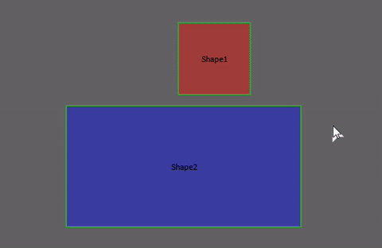

Lazy Loading y optimización de recursos en Front-End
¿Quién soy?
Fran Linde Blázquez
Ingeniero de Software
Desarrollador Webs/Apps desde 2013
Desarrollador Front-End en Minsait desde 2016
¿Qué vamos a ver?
1. Lazy Load Intro
2. Implementación Genérica
3. Lazy Load en imágenes
4. Lazy Load en vídeos
5. Librerías
6. Extra Balls
7. Conclusiones y Q&A
1. Lazy Load Intro
1. Lazy Load Intro
Las páginas web están repletas de ficheros estáticos (JS, CSS, IMGS, VIDEOS, HTML..)
Es posible que estemos cargando estos recursos y que el usuario nunca los vea, lo cual significa:
- Aumentamos tiempo de carga
- Penalizamos posicionamiento (SEO)
- Empeoramos experiencia del usuario
- Aumentamos costes servidor
lazy load = cargar recursos cuando sean necesarios
1. Lazy Load Intro
imgs y vids son los recursos más pesados
En ocasiones HTML o JS también son objetivo de l.l.
Ejemplos de páginas con "problemas":
1. Lazy Load Intro
Cost Sample (S3):
50 prods -> 50 imgs
50 p. + 5 slides -> 250 imgs
250 x 200KB = 50MB
100.000 visitas
5TB diarios
$0.09/GB -> 450$/día
13K$/mes (esta página)
2. Implementación Genérica
2. Implementación Genérica
Tradicionalmente se ha aplicado lazy load.
Ocultamos elementos y esperamos a que sean visibles.
Observamos: scroll, resize y orientation
Old school sample
HTML:


CSS:
.lazy-image {
/* importante -> "reserva hueco" */
min-height: 200px;
background: #DDD;
}
.lazy-image.loaded {
display: block;
background: none;
}
Old school sample
let lazyImages = [...document.querySelectorAll('.lazy-image')];
function lazyLoad() {
lazyImages.forEach(image => {
let topDistance = image.parentElement.offsetTop;
if (topDistance < window.innerHeight + window.pageYOffset + 100) {
image.src = image.dataset.src;
image.onload = () => image.classList.add('loaded');
}
});
};
lazyLoad();
window.addEventListener('scroll', throttle(lazyLoad, 16));
window.addEventListener('resize', throttle(lazyLoad, 16));
DEMO

Intersection Observer API
Permite "escuchar" cuando un elemento (target) intersecta con otro elemento (root) o con el viewport
Mismo HTML / CSS
Intersection Observer API
let lazyImages = [...document.querySelectorAll(".lazy-image")];
let lazyImageObserver = new IntersectionObserver((entries) => {
entries.forEach((entry) => {
if (entry.isIntersecting) {
let lazyImage = entry.target;
lazyImage.src = lazyImage.dataset.src;
lazyImageObserver.unobserve(lazyImage);
lazyImage.onload = () => lazyImage.classList.add('loaded');
}
});
});
lazyImages.forEach((lazyImage) => {
lazyImageObserver.observe(lazyImage);
});
Can I use IntersectionObserver?
DEMO

3. Lazy Load en imágenes
LQIP (Low Quality Image Placeholders)
Pueden ser cargadas como src...

O inline y evitas la petición HTTP 😏

Google Chrome "Loading"
Desde Chrome v.76 tenemos el atr. 'loading'
La idea es la misma, pero sin programar 😝

- auto: por defecto, como no ponerlo
- lazy: carga perezosa, cuando se hace visible (distancia -> conexión, dispositivo, etiqueta...)
- eager: carga inmediatamente (forzado)
DEMO

Responsive imgs (SRCSET)
srcset indica un set de imgs para distintas situaciones

Fallback: CSS y media queries...
También existe (draft) la función image-set en css:
background-image: image-set(
url(examples/images/image-384.jpg) 1x,
url(examples/images/image-768.jpg) 2x,
);
4. Lazy load en video
4. Lazy load en video
Si las imágenes pesan imaginad los vídeos...
Depende del escenario en que nos encontremos
Videos sin autoplay
Debemos hacer uso de la etiqueta preload
Indica al navegador cuánto cargar antes del play
auto: permite que el navegador decida
metadata: solo info mínima: poster, duración...
none: no hace preload 👍
Buen soporte
DEMO

Videos sin autoplay
Implementación sencilla:

Videos con autoplay
Típicos donde antes había un gif
Aplica implementación genérica (cualquiera)
Importante: poster y muted
5. Librerías
5. Librerías
- lazysizes: + completa / no init / I.O.API / 2019 / 7KB
- lozad: básica / requiere init / Old Style / 2019 / 3KB
- blazy: básica / requiere init / I.O.API / 2016 / 5KB
Elección: lazysizes es SEO friendly, no requiere inicialización, varios plugins, setea el "sizes" atutom. Contra: requiere polyfill.
6. Extra Balls
6. Extra Balls: Pre-Connect
Request Order: DNS Lookup, Initial Connection, SSL Negotiation, Time to First Byte (TTFB), Download
Podemos adelantar esto añadiendo la etiqueta:
6. Extra Balls
Reduce el peso de las imágenes (tiny png/jpg)
Revisa server: e-tag, http2, gzip/brotli
Webpack bien configurado
Elimina la pista de audio de los videos "muted"
script defer / async
Google chrome’s Lighthouse
6. Extra Balls
Dominant Color Placeholder
Muy interesante: SQIP (NODE)
6. Conclusiones y Q&A
6. Conclusiones
Piensa 2 veces al importar un estático
Hay muchas librerías que pueden agilizar
No existe LA SOLUCIÓN: Pensemos en perezoso